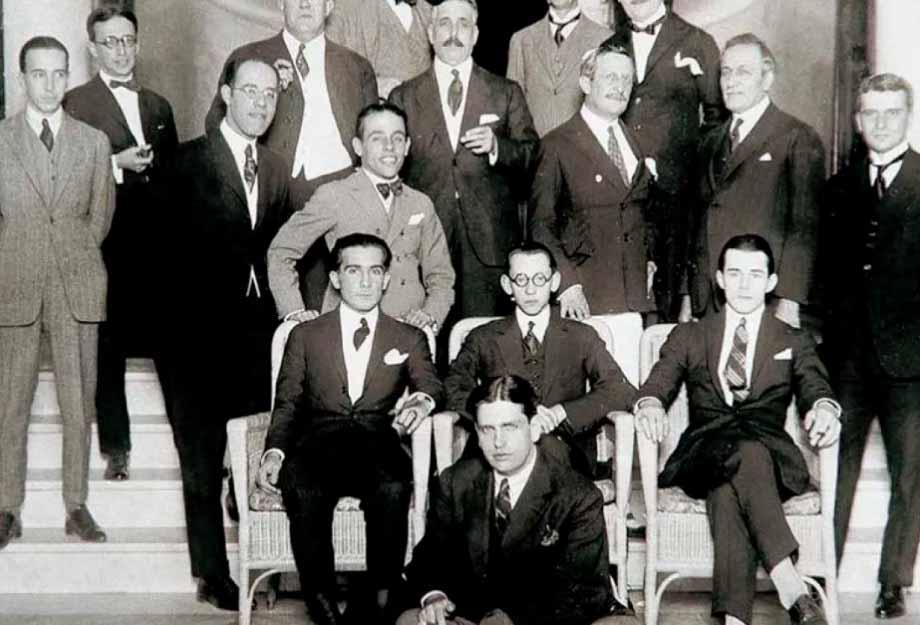

Semana da arte moderna de 1922
A semana da arte moderna foi uma manifestação artístico-cultural que ocorreu em São Paulo, mais precisamente no Theatro Municipal, entre os dias 13 a 18 de fevereiro de 1922. É considerado um dos mais importantes eventos artísticos que ocorreram no Brasil, pois revolucionou as artes em praticamente todas as suas vertentes. A cada dia, diferentes tipos de artes eram expostos, como a pintura, a escultura, a poesia, a música e a literatura. Na época, o evento teve o apoio do governador do estado de São Paulo, Washington Luís.

consequencias
As consequências da semana da arte moderna
A semana da arte moderna de 1922 teve uma importância enorme para que a arte passasse da vanguarda para o modernismo. Aconteceu uma transformação na linguagem artística, já que tinha ocorrido uma ruptura com o passado. Alguns exemplos dessa novidade foram as poesias, que eram apenas escritas, mas passaram a ser cantadas, e as apresentações musicais, que eram feitas à capela e, após a semana, passaram a ser acompanhadas por uma orquestra.
Chamada de polêmica, barulhenta e confusa por muitos, não se pode negar que a Semana de 1922 foi um “divisor de águas no panorama artístico brasileiro”.
algums outros destaques do evento
Escultura
O responsável pelo marco na presença das esculturas do evento foi Victor, um aluno de um outro renomado escultor chamado Dazzi, com seu ateliê montado em São Paulo. O artista ficou tempo suficiente para conseguir a amizade de Oswald de Andrade e Di Cavalcanti e, mesmo sem estar presente, foi o culpado pela repercussão das técnicas de escultura, que foram criadas junto a crítica, artistas e o público em geral.
Música
No evento, a música teve muito destaque, com a presença de Heitor Villa-Lobos, o único compositor que apresentou suas obras três dias seguidos, trazendo algo único para suas apresentações, como “Sonata No.2, para violoncelo e piano”, “Trio n. 2”, e as peças para piano “Valsa mística”, “Rodante” e “A fiandeira”. Além de peças colaborativas com outros nomes muitos conhecidos, como Erik Satie e Francis Poulenc.
Literatura
Polêmicas foram instauradas na literatura durante o evento. Mário de Andrade fez uma palestra e seu texto se tornou uma a publicação: “ A escrava que não é isaura", onde era defendido o abrasileiramento e também a conferência estética moderna, feita por "Paulo Menotti del Picchia", fazendo com que fossem válidos ao final da apresentação.